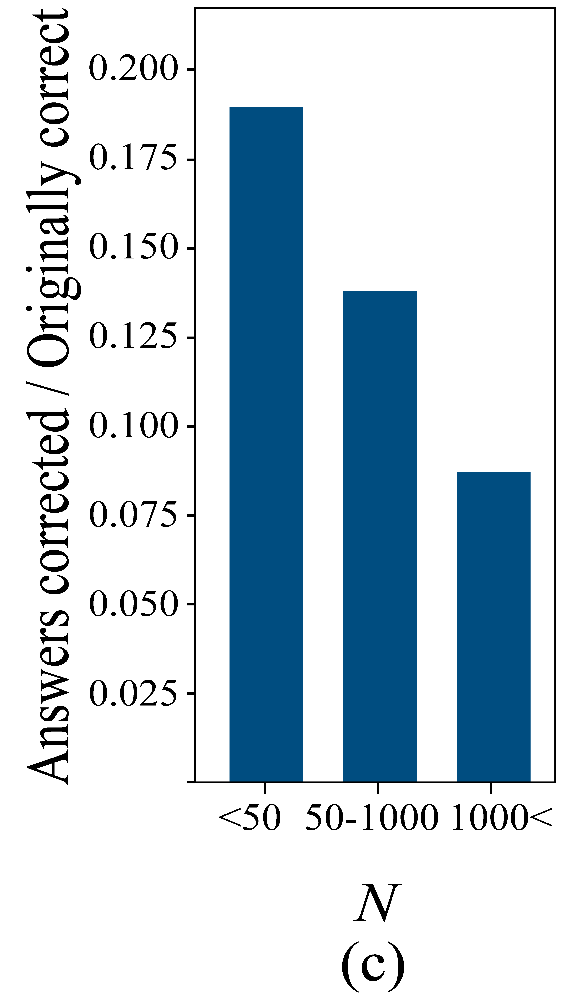
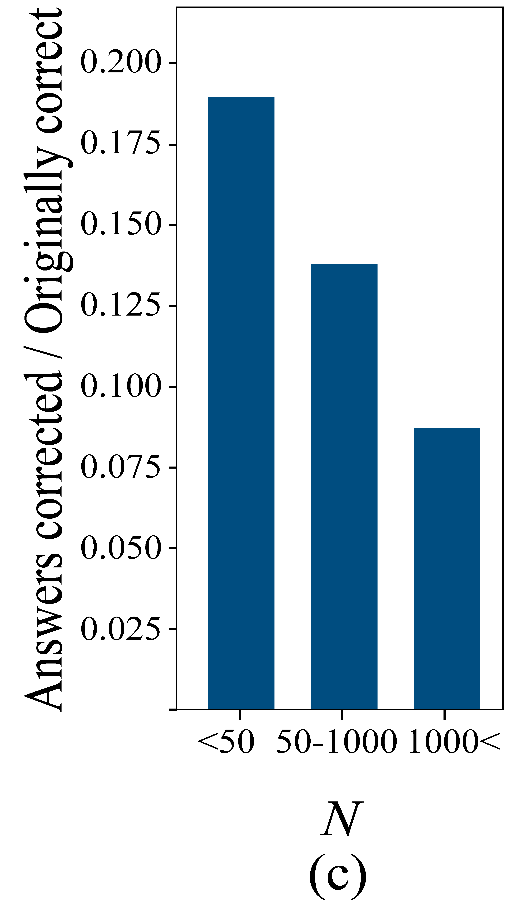

Summary
Transformer-based Large Language Models (LLMs) have become a fixture in modern machine learning. Correspondingly, significant resources are allocated towards research that aims to further advance this technology,
typically resulting in models of increasing size that are trained on increasing amounts of data.
This work, however, demonstrates the surprising result that it is often possible to improve the performance of LLMs by
simply removing higher-order components of their constituent weight matrices in the multi-layer perception (MLP)
layers. This simple intervention, which we call LAyer-SElective Rank reduction LASER, can be done on a model after
training has completed, and requires no additional parameters or data. LASER can dramatically boost predictive
performance on question-answering tasks and across various modalities for which Transformers are used.
 
